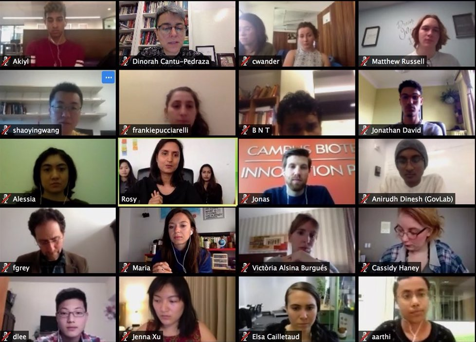

Developing a Data Re-Use Strategy for Solving Public Problems
Communities across the world face unprecedented challenges. Strained by climate change, crumbling
infrastructure, growing economic inequality, and the continued costs of the COVID-19 pandemic, institutions need
new ways of solving public problems and improving how they operate.
In recent years, data has been increasingly deployed to inform policies targeted at these issues. Yet, many of
these data projects, data collaboratives, and open data initiatives remain scattered and atomized. As we enter
into a new age of data use and reuse, a third wave of open data, it is more important than ever to be strategic
and purposeful, to find new ways to connect the demand for data with its supply to meet institutional objectives.
This program tries to help leaders in the public and private sector develop a data re-use strategy to solve
public problems. Noting the ways in which data resources can inform their day-to-day and strategic
decision-making, we teach participants ways in which they can use data to improve how they operate and pursue
goals in the public’s interests. By working differently—using agile methods and data analytics—public sector and
private sector leaders can further open data and reduce data access inequities in ways that advance their
institution’s goals.
Overview
In this accelerated learning program, we will teach participants how to develop a 21st century data strategy.
Participants will learn:
Why It Matters: Focus on the three waves of open data and how data reuse has proven
to be transformative;
The Current State of Play: A review of current practice around data reuse and how
we can move away from ad hoc efforts to systematic, responsible, and sustainable ones;
Defining Demand: Methodologies in how organizations can formulate questions that
data can answer;
Mapping Supply: Methods for organizations to discover and assess the open and
private data available to them;
Matching Supply with Demand: Operational models for meeting the needs of supply-
and demand-side actors;
Identifying Risks: An overview of the risks that can emerge in the course of data
reuse;
Mitigating Risks and Other Legal Considerations: Guidance on legal and contractual
issues that may arise in the course of data collaboration and other data work; and
Institutionalizing Data Reuse: Lessons on how organizations can incorporate data
reuse into their structure and foster future collaboration and data stewardship.
Program learning goals
Empower you to solve public problems through systemic, sustainable, and responsible data reuse
Provide you with a powerful toolkit to draft a data reuse strategy that seeks to address public needs
Introduce the latest tools and technologies for use in designing, implementing and managing policies and
services
Enable you to pursue more purposeful, demand-driven partnerships and collaborations with a broad and
inter-sectoral group of actors
Guide you on the best ways to mitigate risks and promote responsible data practices
Ensure you can translate data into insights and insights into meaningful action
In this introductory session, we review the history of data reuse and the ways in which it has solved public
problems. Through the framework of the three waves of open data, participants will learn about how views of
data use and reuse have changed over time, the impact data reuse has made, and major challenges facing the
field. This information will be conveyed through paradigmatic examples that illustrate different models of
data use.
Following a discussion of the history of the movement, we will discuss current approaches to data reuse
around the world. This session will further develop the discussion of data models introduced
previously—focusing on freedom of information, open government data, and data collaboration. It will then
shift to the current failures of current approaches and the need to shift from ad hoc engagements to more
systematic, sustainable, and responsible models. Participants will receive a detailed explanation of the
changes needed to realize a third wave of open data and the ways in which the third wave can produce public
value.
After providing the conceptual framework for discussion, we will discuss the first step in a data reuse
project: understanding the problem an organization intends to solve and for whom; and how that translates into
questions data can answer Participants will learn approaches for quickly researching complex problems,
assessing public interest in identified problems, and segmenting these potential stakeholders according to
interests and needs. Using experiences from The GovLab’s 100 Questions Initiative, this session will also
describe participatory problem definition and agenda setting, processes which require the capacity to listen
to all people affected or involved in that particular area inside and outside the organization.
Data reuse requires both relevant data resources and technical capacity. This session will teach participants
how to assess both. In the first part of the session, we will explain how participants can find useful data in
their organization and data outside it. Participants will learn how to conduct data audits, map the location
of relevant assets among partner organizations (e.g. companies, nonprofits, and academia), and make use of
open data platforms. In the latter portion of the session, participants will learn the value of internal
capacity reviews and receive recommendations on how they can build internal support for data projects. These
explanations will be informed by real-world examples.
Data reuse efforts can take several forms depending on the operational and organizational needs of supply and
demand stakeholders. In this session, we will provide an overview of the forms these relationships can take,
focusing on two axes: Engagement and Accessibility. We will also provide guidance on the organizational
decisions that data reuse stakeholders must make about how their work is to be governed and maintained.
The use and reuse of data is not without risks to data practitioners, the intended beneficiaries of their
projects, and others. In this session, we will review the various dangers that data practitioners need to be
aware of, including those related to privacy, data security, poor decision-making, and open washing.
Participants will additionally learn about the different risks data reuse poses to individuals, a relatively
well-discussed issue, and groups, a relatively under-discussed problem.
Data reuse projects, such as data collaboratives, need policies and procedures that allow all participants to
understand their roles and interact with the data in an ethical, legal, and responsible manner. In this
session, we will seek to demystify the legal and governance elements of data collaboration to address the
risks identified in the previous section. Using the Contractual Wheel of Data Collaboration as a model, we
will invite participants to explore the why, what, who, how, when, and where of their legal agreements and
demonstrate the different forms these elements can take.
Data reuse projects can address public problems but their potential is best realized when they can be
maintained in the long term. As such, organizations need to make changes in how they operate, ensuring they
are positioned to take advantage of future cross-sector data collaborations. In this session, we will
demonstrate that systematic, sustainable, and responsible data reuse can be best realized through the creation
of a data steward position within an organization. The session will discuss how this role can coordinate
efforts investigating where relevant data is, who has it, who needs it, and how it can best be used to tackle
the problem. It will also discuss the role of the data steward in assessing human infrastructure, telling
organizations what their gaps are and who they need to collaborate with and the priority they should assign to
these relationships.
Learning by Doing
When learning how to innovate in government, it helps to talk with those who have done it before. Attendees
enjoy confidential small group, off-the-record discussions as well as informal conversations with experienced data stewards and other professionals in
data reuse organizations such as divisions within:
International Organizations (e.g. UNICEF, OECD, and World Bank)
National Statistical Offices (e.g. Danmarks Statistik)
Sub-National Policymaking Bodies (e.g. the City of New York)
Technology Start-ups (e.g. Cuebiq)
Large Technology Companies Working with the Public Sector (e.g. LinkedIn, Maxar Technologies); and
Leading Nonprofits and Philanthropies Supporting Governance Innovation.
We make an effort to customize field trips to respond to your interests and requests. Please note that guest
presentations will be in English.
Online Project Coaching

In addition to remote training, we offer an online coaching program that includes:
A flexible, customized program responsive to the participants’ specific needs and challenges;
Rigorous diagnosis of impediments to project implementation;
A combination of subject-matter and skills-based training to address deficits in knowledge;
Mentoring and coaching from experts with a track record of leading successful social change; and,
High-quality original and curated content, tools, and resources.
The coaching program is designed to support participants at their desks to advance your own projects. Coaching
generally includes twelve weeks of hands-on training, where each team will receive:
Six all-group online meetings with GovLab faculty and expert guests;
Written feedback on the materials they create;
Connection to subject-matter experts and practitioners in the field; and,
Private office hours for individuals or teams.
A demo day to present the results of the projects.
A dedicated coach and coordinator for every ten participant individuals/teams.
Each team aims to finish with a tested data collaborative, a proof of concept and a plan for its implementation and
scale.
Organization of the Course
This course will be taught in an interactive, online group setting. Participants will meet every week for eight weeks of live instruction. While each classes will be carefully crafted to meet the needs of participants, each class will include:
Half-day seminars delivered by top faculty and practitioners;
Discussions with data stewards who have successfully developed data collaboratives or open data strategies for their organization;
Custom resources including videos, case studies, articles, and other reading materials; and
Hands-on exercises and opportunities to work with peers.
Course Objectives
By the end of the eight-week course period, participants will possess
A greater understanding of the three waves of open data;
The ability to promote data responsibility and data stewardship within their organization; and
An operational Data Collaboration and Reuse Strategy that serves the unique needs of the participant’s organization.
At the end of the course, participants will additionally join a network of course alumni through which they can continue to share regular insights and engage in peer-to-peer learning.
Application Process and Costs
This course intends to attract and develop highly talented aspiring data stewards who are interested in better incorporating data reuse into their operations. While an application to participate is free, participation will be limited to a small cohort who work on data collaboration issues or serve individuals tasked by their organization to act as data stewards. Ideal applicants will have several years of experience in a leadership role and demonstrate the capacity to work acros sectors.
We admit candidates to specific sessions on a rolling, space-available basis, and encourage you to apply as early as possible. Admission is a selective process based on your professional achievement and organizational responsibilities.
Applicants are asked to submit a resume and supporting material using the form here [LINK] and to answer a handful of short questions about your interests and experience.
Those interested in learning more can email us at datastewards@thegovlab.org. Please include “Data Re-Use Strategy Course” in the subject line.
Program Leads
All sessions are taught by Open Data Policy Lab staff with both academic and real world experience.
An initiative of The GovLab with support from Microsoft, the Open Data Policy Lab seeks to
accelerate the responsible re-use and opening of data for the benefit of society and the equitable spread of
economic opportunity. As part of this mission, the Open Data Policy Lab supports decision-makers at local,
state, and national levels, crafting a series of tools to help navigate and respond to the challenges posed by
the third wave of open data. The GovLab, based at the Tandon School of Engineering at New York University, aims
to promote openness, collaboration, and legitimacy in governance through the use of data.